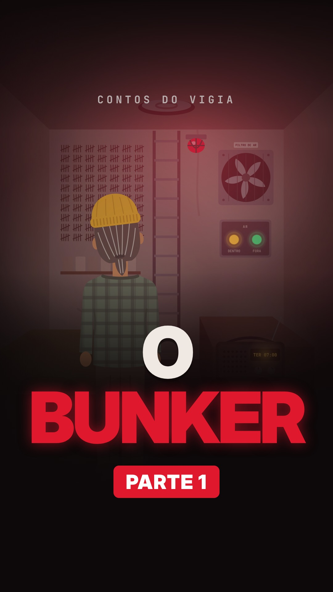
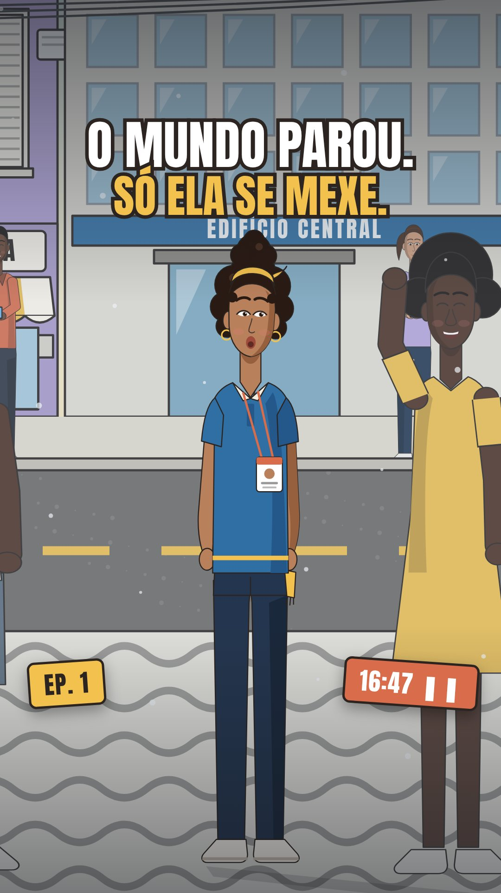

Conte histórias em partes. Deixe o público escolher o caminho.
O Estúdio do Nogueira é um modelo completo, com guia e skill para o Claude Code, para você criar o seu canal de séries animadas com IA. A ideia é sua, o nicho é seu, a voz é sua escolha. O Claude adapta tudo ao que você quer contar.


- Qualquer nicho
- Roda na nuvem
- Tudo editável
- Pagamento único
Uma série, um gancho, o público decide.
Série em partes
Cada vídeo conta um pedaço da história e para no melhor momento.
O público vota
No fim, quem assiste escolhe nos comentários o que acontece na próxima parte.
A voz que você escolher
A sua voz clonada, uma voz pronta de um banco de vozes ou uma voz que você cria com IA. Quem decide é você.
Seu nicho. Sua história. Sem regras escondidas.
Você não precisa seguir o nosso nicho. Terror, comédia, romance, fantasia, curiosidades, história infantil, o que você quiser contar. Você traz a ideia e o Claude adapta o processo inteiro a ela.
Edite tudo
O modelo é seu para mudar: o jeito do roteiro, as cores, os personagens, a voz, o ritmo dos vídeos.
Qualquer nicho
A skill pergunta qual é o seu nicho e o seu público logo no começo, e todo o resto segue a sua escolha.
Sem pegadinha
Nada de regra escondida no meio do caminho. O que você cria com o Estúdio é seu.
Do primeiro rabisco ao post, com o Claude do seu lado.
A skill guia o Claude em cada etapa. Ele faz, mostra e só segue quando você aprova.
- O mundo da sérieA ideia, os personagens e tudo o que a história precisa para se manter de pé.
- O roteiroCada parte escrita para prender do começo ao fim e terminar numa escolha.
- Os caminhosO que acontece com cada escolha do público.
- Personagens e cenáriosPartindo de um personagem-base, você define o visual de cada um.
- A vozA narração com a voz que você escolher, encaixada nas cenas.
- Cenas e legendaAs cenas animadas e a legenda no vídeo.
- O somAmbiente e efeitos que dão clima sem atrapalhar a narração.
- PostagemCapa, Stories da votação e a legenda do post.
Comece de um rosto. Termine com o seu personagem.
Você recebe um personagem-base simples: rosto, olhos e boca. O resto você escolhe junto com o Claude: cabelo, roupa, acessórios, cores, jeito e expressões.
Assim cada canal tem personagens com a cara do criador, e não do modelo.
- rosto
- cabelo
- roupa
- acessórios
- cores
- expressões
Canais nossos, criados com este mesmo processo.
Os dois modelos abaixo são criações do Estúdio do Nogueira e aparecem como exemplo dentro do produto. Um é noite, o outro é dia. Nichos, visuais e ritmos diferentes, o mesmo passo a passo.
Contos do Vigia
Terror leve e mistério em partes, no escuro, com luz de lanterna. Série: O Bunker, um homem trancado há cinco anos num bunker e um filtro de ar que começa a falhar.
O Tempo Parou
Comédia do dia a dia com mistério leve, colorida e cheia de movimento. Às 16:47 o mundo congela e só a Rose se mexe. O público decide o que ela faz.
Diário de produção: O Bunker, parte 1
A primeira série do canal Contos do Vigia estreou em 07/11/2026. O canal está começando agora, então aqui não tem número de visualização nem promessa de alcance: tem o que foi feito e o que deu errado no caminho.
| 1 | Faz cinco anos que o Otávio não sai do bunker do quintal. |
| 2 | Até aquela terça, os vizinhos achavam o bunker um exagero. |
| 3 | Às sete da manhã, ele tomava café quando a TV ficou vermelha. |
| 4 | Uma sirene e uma frase só: "Fiquem em casa. Não respirem a névoa." |
| 5 | Pela janela, uma névoa vermelha descia a rua. |
| 6 | Ele largou o café, correu pro quintal e se trancou. |
| 7 | Desde então, toda noite, o rádio repete o mesmo aviso. |
| 8 | Hoje, o filtro de ar começou a falhar. |
| 9 | Ele tem ar pra três dias. E o sinal verde... nunca veio. |
| 10 | Ele sai ou fica? Comenta SAI ou FICA. Segue pra ver a parte 2. |
Erro 1 · O zumbido que machucava
Um som grave de fundo, que parecia bom no computador, virou chiado no celular e incomodava o ouvido.
→ Corrigido. O jeito de evitar está no guia.Erro 2 · Efeitos cobrindo a voz
Os efeitos sonoros estavam mais altos que a narração em alguns trechos.
→ Corrigido. A regra que ficou está no guia.Erro 3 · Voz com sotaque
A primeira narração usou uma voz pronta estrangeira, com sotaque.
→ Trocada por uma voz que combina com o canal.Erro 4 · A mancha preta
Uma cena escura virou uma mancha preta na tela do celular.
→ Corrigido com um ajuste de luz.Esses erros e as correções estão no guia, para você não precisar passar por eles.
O modelo completo, pronto para adaptar.
O guia passo a passo
Da ideia ao post, em cadernos curtos e diretos, com exemplos reais de O Bunker.
A skill para o Claude Code
As instruções que o Claude segue para fazer o processo com você, etapa por etapa, no nicho que você escolher.
O personagem-base editável
O ponto de partida para criar os personagens da sua série com o Claude.
Modelos para preencher
Para organizar a série, os personagens, os roteiros, os caminhos e a postagem.
O que o guia cobre
- Escolher o nicho e o público
- O narrador e o jeito do canal
- A votação como motor
- O mundo da história
- Os personagens
- Os caminhos
- Como prender do começo ao fim
- O gancho
- A pergunta do final
- Escolher ou criar a voz
- Dar emoção à narração
- Encaixar a voz nas cenas
- Personagens e cenários
- Cenas que funcionam no celular
- Legenda e som
- Capa, Stories e legenda
- Ler a votação
- Rótulo de IA e cuidados
As ferramentas que você assina por fora.
O Estúdio ensina o processo. As ferramentas abaixo não estão incluídas. Você contrata direto com cada empresa:
- Claude CodePrecisa de uma assinatura Claude Pro ou superior. É ele quem escreve, desenha e monta os vídeos com você.
- Voz com IAUse a ferramenta de voz que preferir. Nós usamos o ElevenLabs: para usar a narração em vídeos públicos, ele exige um plano pago (é o que libera o uso comercial).
- RemotionA ferramenta que transforma o projeto em vídeo. É grátis para pessoa física e para empresa de até 3 pessoas. Acima disso, exige licença paga.
Não precisa de computador potente
Dá para fazer tudo pelo navegador, com o Claude Code na nuvem: o vídeo é montado nos computadores da Anthropic, não no seu. Sem instalar nada pesado. Um computador simples dá conta, e você acompanha até pelo celular.
Preços e regras dessas ferramentas são definidos por elas e podem mudar. Confira no site de cada uma antes de assinar.
- tem uma ideia de história e quer um canal com a sua cara;
- quer aprender a trabalhar com o Claude Code, mesmo sem saber programar;
- gosta de ver o público participando da história;
- tem paciência para postar com constância.
- procura resultado garantido ou dinheiro rápido;
- não quer assinar nenhuma ferramenta;
- quer copiar histórias ou personagens de outras pessoas.
Leve o que fizer sentido para você.
O guia passo a passo
pagamento único
- O guia passo a passo
- Modelos para preencher
- O diário de produção de O Bunker
Guia + skill + personagem-base
pagamento único
Separados: R$ 74 · economize R$ 7
- O guia passo a passo
- A skill para o Claude Code
- O personagem-base editável
- Modelos para preencher
- O diário de produção de O Bunker
A skill para o Claude Code
pagamento único
- A skill para o Claude Code
- O personagem-base editável
As ferramentas (Claude e a de voz) são assinadas à parte.
Dúvidas comuns
Preciso seguir o nicho de terror?
Não. O Contos do Vigia é de mistério, mas o Estúdio serve para qualquer nicho. Você conta a sua ideia e o Claude adapta o processo a ela.
Preciso saber programar?
Não. Quem escreve o código é o Claude Code. Você aprova cada etapa, ouve, assiste e pede ajustes em português.
Preciso de um computador bom?
Não. Com o Claude Code na nuvem, tudo roda pelo navegador e o vídeo é montado fora do seu computador.
Posso mudar o modelo?
Pode e deve. Roteiro, visual, personagens, voz e ritmo: tudo é editável para ficar com a cara do seu canal.
Qual voz posso usar?
A que você quiser: a sua voz clonada, uma voz pronta de um banco de vozes ou uma voz criada com IA. Só não use a voz de uma pessoa real sem autorização dela.
Vou ganhar seguidores ou dinheiro?
Não dá para prometer isso. Os nossos canais também estão começando. O Estúdio ensina um processo de produção. O resultado depende da sua história, da sua constância e do seu público.
Como recebo o acesso?
A compra é feita pela Cakto. Depois do pagamento aprovado, você recebe o acesso por e-mail.